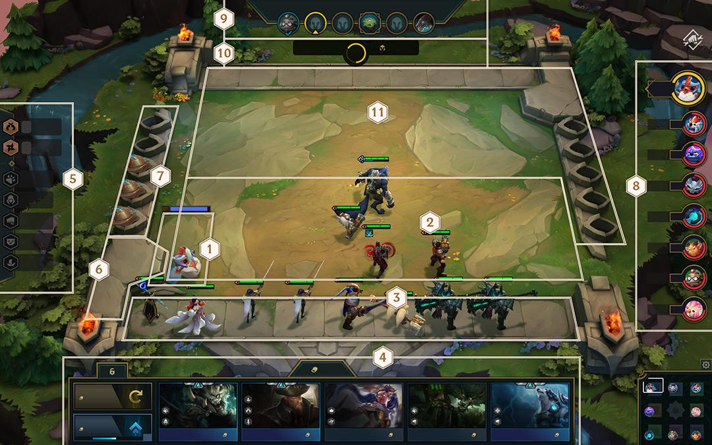

Taktikus csapatharc
A Szövetség töredezett, álomszerű világában játszódó Taktikus csapatharc egy vadonatúj LoL-játékmód, amelyben hét ellenféllel versenyzel az egyeduralomért. Állítsd össze a legjobb csapatot, tedd őket még erősebbé, és nézd, ahogy harcba indulnak. Ha elég ügyes vagy, a végén csak te maradsz talpon.
JÁTÉKMENET
Kicsi legendák
A Kicsi legendád fog képviselni téged a Taktikus csapatharcban. A Taktikus csapatharcban való részvétellel újabb Kicsi legendákra tehetsz szert, illetve meg is veheted őket a League of Legends boltjában. Kicsi legendáid között a játék előszobájában, a meccs kezdete előtt válthatsz. A Kicsi legendát a jobb gombbal mozgathatod az arénában, és ugyanúgy használhatsz vele hangulatjeleket, mint bármelyik LoL-játékmódban.
Vezérlők
Az irányítás alapjai
Szinte mindent el tudsz végezni a bal egérgombbal.
- A hősöket húzással tudod mozgatni a csatamező pontjai között, illetve a csatamező és a kispad között.
- Kattints a tárgyakra, és húzd azokat a kívánt hősre.
- A hősöket bal kattintással tudod megvenni a boltban.
- A hős eladásához kattints a hősre, és húzd vissza a boltba.
- A kistérképre vagy az eredményjelzőre kattintva nézheted meg más játékosok arénáit.
Jobb kattintással jelölheted ki, hogy hova szeretnéd küldeni a Kicsi legendádat.
- Jobb kattintással vizsgálhatod meg a hősöket, hogy részletes információt kapj róluk.
További irányítási lehetőségek
- W – Nyomd le, amikor egy hősre mutatsz. Ezzel a hőst a kispadról a csatamezőre helyezed, vagy hazateleportálod a csatamezőről a kispadra.
- E – Eladod a hőst, akire éppen mutatsz.
- 1 és 2 – Ezekkel a billentyűkkel válthatsz az egyes játékosok arénái között. Az „1”-es billentyűvel a következő, a „2”-es billentyűvel az előző arénára ugrasz.
- Szóköz – A kamera a Kicsi legendára fókuszál, bárhol is jár éppen. Többnyire az arénádban tartózkodik.
Saját aréna

- Kicsi legenda
- A Kicsi legendád mindig itt van. Köszönj neki!
- Csatamező
- Itt zajlanak a harcok. A hőseidet a hozzád közeli sorokban helyezheted el. Az ellenfél a felső részen helyezheti el a saját csapatát.
- Kispad
- A megvásárolt hősök idekerülnek, mielőtt bevetnéd őket a csatamezőn.
- Bolt
- A bolt véletlenszerű hősöket (akár dupla példányokat) kínál eladásra egy közös készletből. A dupla példányokat egyesítve létrehozhatod a hős egy erősebb változatát (erről később részletesebben írunk).
- A bolt zárolása/feloldása: zárolhatod a boltot, hogy ne frissüljön automatikusan a kör elején. Ez akkor lehet hasznos, ha van valami a kínálatban, amit meg szeretnél venni, de épp nincs ehhez elég aranyad.
- Frissítés: egy kis arany befizetésével azonnal frissítheted a boltban lévő hősöket. Ez automatikusan megtörténik a körök elején, de néha további lehetőségre lehet szükséged.
- TP vásárlása: aranyért tapasztalati pontokat vehetsz. Minél magasabb a szinted, annál több (erősebb és drágább) hőst állíthatsz csatasorba.
- Adottságok követése
- Nyomon követheted azokat az osztálybónuszokat, amelyekre jogosultak lehetnek a hőseid.
- Fegyvertár
- de kerülnek a tárgyak, mielőtt egy hősnek adod azokat (ehhez húzd át azokat egy hősre). Ha eladsz egy hőst, akinél egy tárgy volt, a tárgy ide kerül vissza.
- Aranytermelők
- A nálad lévő aranymennyiségtől függően aranytermelők jelennek meg. Minden aranytermelő egy aranyat ad kamatként a következő kör elején.
- Eredményjelző
- Itt látható a játékban részt vevő játékosok életereje. A játékosokra kattintva megnézheted az arénájukat.
- Szakasz követése
- Számon tartja, hogy hány kört nyertél meg az adott szakaszban, hányat veszítettél el, és hány van még hátra.
- Fázis követése
- Mutatja, hogy épp melyik fázisban jársz, és hogy mennyi idő van belőle hátra.
- Az ellenfél oldala
- Amikor szembenézel egy ellenséges csapattal, látni fogod a kispadját, a fegyvertárát és az aranytermelőit. És persze a Kicsi legendáját.
Játékosokra épülő mechanizmusok
Életerő
A játékot 100 életerővel kezded. Amikor elveszítesz egy csatát, attól függően veszítesz életerőt, hogy hány ellenséges hős maradt életben, és hogy milyen erősek voltak. Ha az életerőd nullára csökken, kiesel a játékból, a hőseid visszakerülnek a közös készletbe, és megveheti őket a többi játékos.
Arany
Az arany lesz az elsődleges erőforrás, amely több célt is szolgál:
- Hősök vásárlása.
- A bolt frissítése.
- Tapasztalati pontok vásárlása a gyorsabb szintlépéshez.
Aranyat több módon lehet szerezni:
- Automatikusan, minden kör elején.
- Kamatként, a körök elején attól függően, hogy hány aranytermelőd van.
- Bónuszként, a körök elején, ha győztes VAGY vesztes szériád van.
- Azonnal, amint megnyersz egy PvP-kört.
Aranyat kapsz azon eladott hősök után, akikre már nincsen szükséged. Az erősebb hősök esetében nem kapod vissza a teljes vételárat, csak annak egy részét.
Szintlépés
Minden játékos az 1. szintről indul, és a meccs során fejlődve legfeljebb a 9. szintig juthat. A szinteddel egyező számú hős lehet a csapatodban, és a magasabb szinteken egyre erősebb hősökhöz férhetsz hozzá.
Minden kör végén kapsz némi tapasztalatot, épp annyit, hogy a játék korai szakaszában elkezdhess szinteket lépni. Azonban a meccs későbbi szakaszában már aranyért kell tapasztalati pontokat vásárolnod, hogy tovább bővíthesd a csapatodat.
A játék felépítése
Szakaszok
A Taktikus csapatharc szakaszokra tagolódik, amelyek több körből állnak.
Körök
A körök többnyire egy tervezési fázisból és egy harci fázisból állnak.
Tervezési fázis
A tervezési fázis elején több dolog is történik automatikusan.
- Aranyat kapsz.
- A bolt új hősökkel frissül (kivéve, ha zároltad).
A tervezési fázis során 30 másodperced van hősöket vásárolni, frissíteni a boltot (ha szükségesnek érzed), valamint elhelyezni a hőseidet a csatamezőn.
A tervezési fázis után véglegessé válik a csapat összetétele, és készen állsz a harcra.
A hősök elhelyezésekor vedd figyelembe az erősségeiket és a gyenge pontjaikat. A szívósabbakat tedd az első sorba, és helyezd mögéjük a sebezhetőbbeket. De légy óvatos – vannak hősök, akik képesek közvetlenül támadni a hátsó sorokat.
Harci fázis
A Taktikus csapatharc döntően PvP-körökből áll, amelyek során véletlenszerűen választott ellenfelekkel kell megküzdened. A harci fázis a tervezési fázis után következik. A Kicsi legendád és a hősökből álló csapatod az ellenfél arénájába teleportál, vagy az ellenfél érkezik hozzád. A harci fázis akkor ér véget, ha lezárult a kör összes csatája (eldől a győztes és a vesztes személye), vagy ha lejár a kiszabott idő. Ha a csata nem fejeződik be időben, mindkét játékos az ellenfél még életben lévő hőseinek száma alapján szenved el sebzést.
Duplikált csapatok
Ha páratlan számú játékos maradt versenyben (hét, öt vagy három) egy PvP-körben, az egyik csapatról egy duplikátum készül, hogy páros számú csapat legyen. A duplikált csapat bárkivel összekerülhet, kivéve azt a csapatot, amelyről a duplikátumot készítette a rendszer. Ha megnyeri a harcot, ugyanúgy sebzést okoz az ellenfelének, mint egy valódi csapat. Ha veszít, semmi sem történik, mivel amúgy is eltűnik a kör végén.
Harci fázis (PvE)
Néha PvE-köröket kell játszani, ilyenkor a játékos a mesterséges intelligencia által irányított szörnyekkel küzd meg. A játékok első három köre mindig PvE, és azt követően a legtöbb szakasz utolsó köre is az lesz. A legyőzött szörnyek néha tárgyakat hagynak hátra, amelyeket a hőseidnek adhatsz.
Közös draft
A játék elején, majd további körökben a játékosok közös draftban vesznek részt. A közös draft során minden játékos a Szövetség központi szigetére teleportál, ahol egy ingyenes hőst szerezhet magának a véletlenszerű felhozatalból. Rohanj neki annak a hősnek a Kicsi legendáddal, akit meg szeretnél szerezni, de légy óvatos: a Kicsi legendák az elsőként megérintett hőst veszik fel, nincs második lehetőség! A későbbi közös draftokban az alacsonyabb életerejű játékosok választhatnak először.
A játék elemei
Minden egyes az Elemek felemelkedése-játék véletlenszerűen kiemel egy elemet: Tűzcsóva, Óceáni, Hegyi vagy Szél. A játék eleme a forgótár közepén található és van néhány hatása.
Először is Qiyana eleme megfelel a játék elemének. Másodszor a Sárkány elleni harc az elemi sárkánnyal folyik, ami megfelel a játék elemének. Végül pedig a játék eleme irányítja az új elemi mező működését.
Amikor betöltöd a Szövetséget, egy véletlenszerű mező fel lesz ruházva a játék elemével, és minden körben erősíti azt a hőst, aki ezen kezd harcolni. Amikor a játék a 3-1 szakaszba jut, egy második elemi mező is létrejön. Mind a nyolc játékos tábláján ugyanazok a mezők lesznek kiválasztva.
Az elemi mezők a következő hatásokat biztosítják:
- Tűzcsóva: Növeli a támadási sebességet a harc időtartamára.
- Óceáni: További manával kezded a harcot.
- Hegyi: Végleges életerőre tehetsz szert, amely a körök között halmozódik, és megmarad akkor is, ha a hős ellép az elemi mezőről.
- Szél: Növeli a kitérési esélyt a harc idejére.
Ne felejtsd, hogy az elemi mezők erősítései egy tárgyhelyet elfoglalnak. Ha egy három tárggyal rendelkező hős egy elemi mezőn harcba kezd, nem kap erősítést.